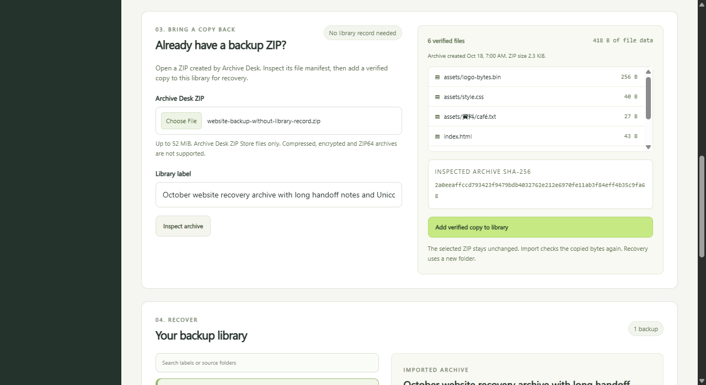
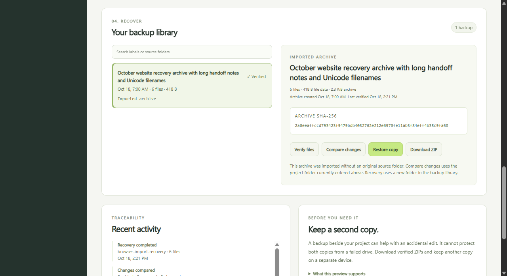

Check the archive first.
Read its file manifest, CRC values and SHA-256 hashes. Review the paths and sizes before adding anything to the library.
Inspect an Archive Desk ZIP, add a verified copy to a fresh library and restore its files into a new folder. The original library record is optional.
Version 0.2.0-candidate.1. Requires Node.js 24. This page presents the app. File operations run on your computer after you extract the source and start the local server.

Read its file manifest, CRC values and SHA-256 hashes. Review the paths and sizes before adding anything to the library.
Choose a label. The app reopens and checks its new ZIP copy before registering it. The selected original stays unchanged, and duplicate archive bytes are refused.
Recover from the imported archive and check every saved file. Existing destination folders are refused. No original project folder is needed for recovery.

node server.mjs http://127.0.0.1:4330/ node --test server.test.mjs vendor/cli.test.mjs
The source uses Node.js built-in modules. No runtime package installation, cloud account or registration is needed. Stop the app with Ctrl+C.

The app refuses a corrupt or unrecognized library instead of silently replacing it. Preserve the old storage folder. Restart with a different empty storage folder, then import your saved ZIP there.
node server.mjs --workspace "C:/Projects/site" --storage "D:/ProjectBackups/recovery" --port 4330
Workspace and storage must be separate folders. The workspace is used for new backups and explicit comparisons. Import and recovery can use the ZIP without knowing its original source folder.
The earlier Workbench 0.1 guide and source remain available. The existing library format is supported by this preview.
Keep another verified copy on a separate device. Stop programs that may change files while backing up. This manual local preview does not provide an atomic snapshot, an adversarial filesystem race guarantee or a production security certification.
All 23 backend and CLI tests passed. Eight independent workflows used a separately produced ZIP and checked inspection, import, duplicate refusal, exact recovery and restart persistence.
Twelve browser cases passed, with layouts checked at 320, 390, 768, 1024 and 1280 pixels. The actual browser download and recovered files matched the independent bytes.
The frozen source ZIP was freshly extracted, its same 23 tests rerun and its app used for an actual browser import and six-file recovery. Repeated checks are not counted as additional unique tests.
Tested scope is Windows, Node.js 24.19.0 and the current test browser. Linux and macOS have not been tested. This is independent product work using synthetic files, with no client delivery or customer acceptance claim.